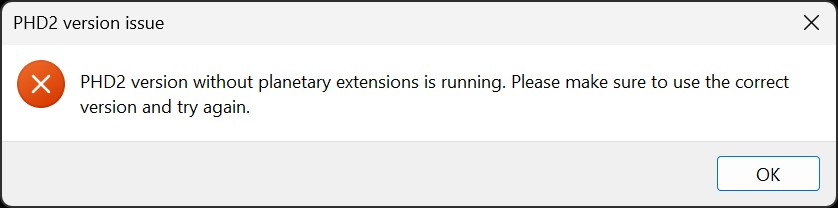

The PHD2 server must be enabled for HelioMaker to connect successfully. If the server is disabled, HelioMaker will be unable to establish a connection. To resolve this, open PHD2 and ensure that the Enable Server option is checked in the Tools menu.
HelioMaker requires a customized version of PHD2, specifically designed to support its advanced features. If you have not installed or configured this custom version and are using the standard PHD2 version, HelioMaker may silently fail to connect or display an error message.

To resolve this issue, install the correct version of PHD2 as specified in the Installation and Prerequisites section and configure it according to the PHD2 Configuration instructions.
HelioMaker's connection to PHD2 depends on PHD2 successfully connecting to the equipment profile defined in HelioMaker's PHD2 configuration. If PHD2 encounters an error or times out while attempting to connect to your physical gear (e.g., camera or mount), HelioMaker may fail to establish a full connection with PHD2, and the link button will remain red, indicating a failed connection.
In this case, try reconnecting by pressing the link button in HelioMaker again. If the connection still fails, switch to PHD2 and troubleshoot any issues with its connection to your physical gear. Ensure that the camera and mount are properly connected, configured, and functioning within PHD2.
If a customized PHD2 version has been launched externally by the user using a Windows shortcut
configured with an instance number (via the -i option in the command line) that differs
from the instance number defined in HelioMaker's PHD2 configuration, the connection between the two programs may fail.
This can sometimes result in an error message or a silent failure.
To resolve this issue, you can either:
- Close the running instance of PHD2 and use the link button in HelioMaker to launch a new instance with the correct instance number.
- Close the running instance of PHD2 and ensure that the instance number in the PHD2 shortcut matches the PHD2 instance value set in HelioMaker's PHD2 configuration. Then, use HelioMaker's Link button to launch and connect to PHD2.
Note: Changing instance numbers will impact existing PHD2 equipment profiles, as each instance number maintains its own unique set of profiles and global settings, including the internal window layout. If you choose to change the instance numbers, ensure you reconfigure the equipment profiles accordingly.
HelioMaker requires a valid PHD2 equipment profile to be selected in its PHD2 Configuration settings.
To resolve this issue, synchronize the PHD2 equipment profiles with HelioMaker by opening the PHD2 Configuration dialog in HelioMaker. Click the Get Profiles button and select the desired profile. This updates HelioMaker's profile list to match the profiles defined in PHD2, ensuring that HelioMaker can use a valid equipment profile when connecting via the Link button.
The PHD2 Configuration dialog can be accessed via the gears button or through the Setup menu in HelioMaker.

Sometimes, if you accidentally open the standard PHD2 version and use an equipment profile previously configured by the custom version, the standard PHD2 may fail to recognize the Virtual Planetary Camera and remove it from the profile. Subsequently, when you use HelioMaker to open and link with the custom PHD2 version, the equipment profile will be invalid, missing the proper reference to the Virtual Planetary Camera, causing the connection to fail.
To resolve this issue, open a running instance of the custom PHD2 version and manually reconfigure its equipment profile to include the Virtual Planetary Camera. Once this step is completed, HelioMaker should be able to connect successfully.
On rare occasions, due to internal network errors or timing issues, HelioMaker may fail to connect to PHD2 on the first connection attempt. In such cases, try clicking the Link button again to establish the connection. If the issue persists, please refer to the other possible reasons listed below for further troubleshooting.
HelioMaker communicates with other applications over specific network ports. If port access is blocked by your firewall or is being used by another application, the connection may fail. To resolve this:
- In HelioMaker's Advanced Settings, change the base port number, then restart HelioMaker, PHD2, and SharpCap Pro.
- Ensure that HelioMaker is granted access to the port in your Windows firewall settings. Add an exception for HelioMaker if necessary.